AURORA STUDIO · UI PROTOTYPE
EN / 日本語 / 繁中
BETWEEN THE LIVING AND THE LOST
CURRENT OBJECTIVE
[ E ] INVESTIGATE
霊
ETHER SIGHT / 霊視
J Journal · I Inventory · Q Ether Sight · D Dialogue · Esc Pause
ESC · BACK
INVESTIGATION
調査記録
© AURORA STUDIO · HTML5 SIMULATOR
THE VEIL REMEMBERS
CLICK OR PRESS ENTER TO CONTINUE
SIMULATOR · F2